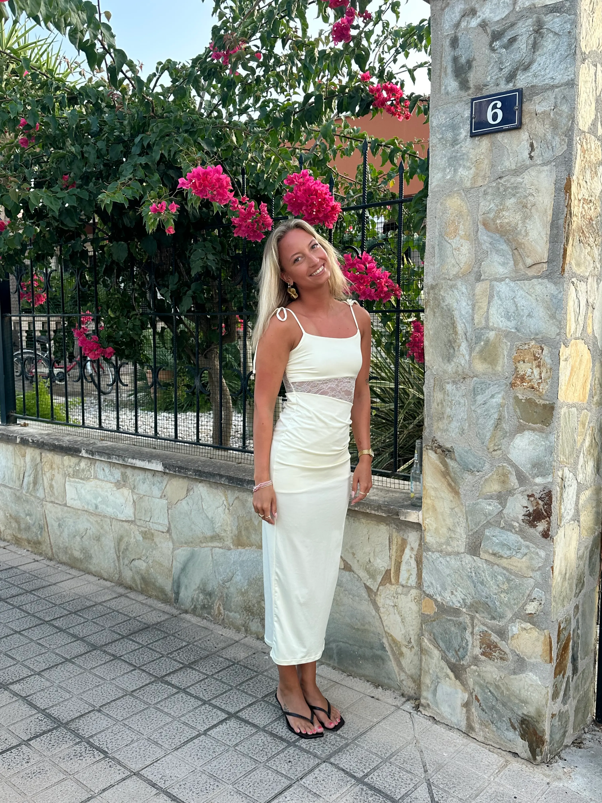
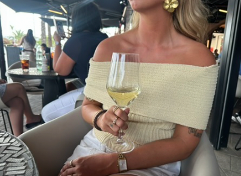
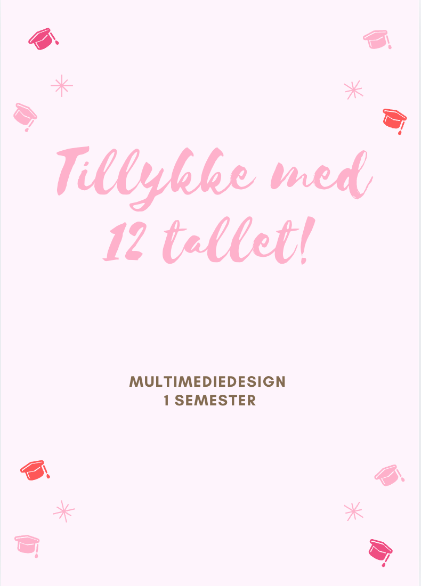
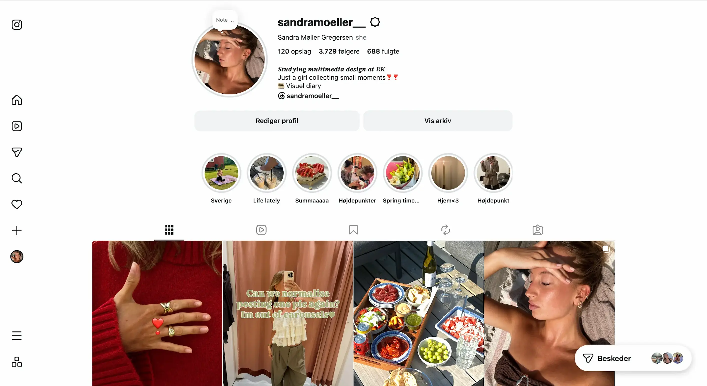
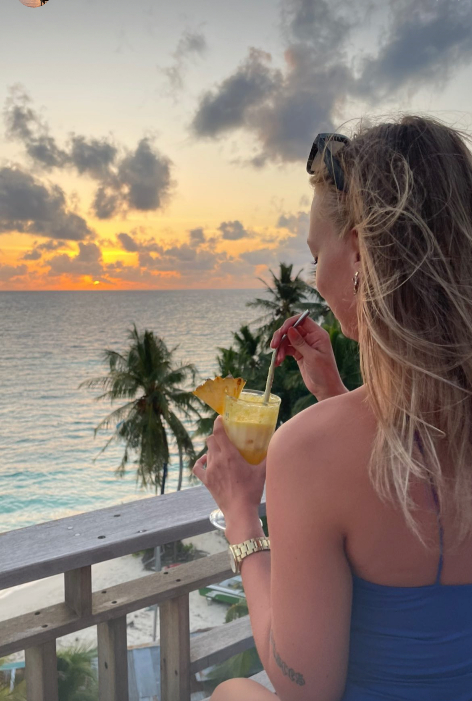
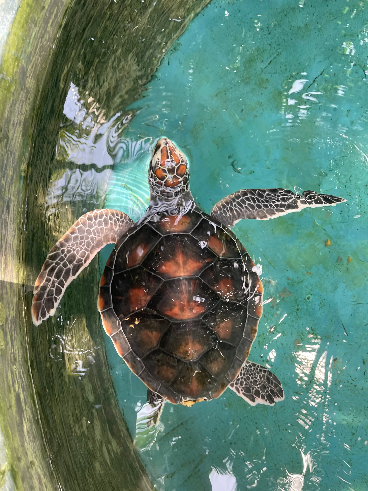

SANDRA
Mit navn er Sandra, jeg er 23 år og studerende på Multimediedesign-uddannelsen. Jeg brænder for kreativt design, visuelle løsninger og digitale oplevelser, hvor æstetik og funktionalitet går hånd i hånd. Jeg finder glæde i at udforske nye idéer, skabe gennemarbejdede designs og omsætte tanker til brugervenlige digitale løsninger med fokus på detaljer og en stærk visuel identitet.
Kreativ digital designer
med fokus på
brugeroplevelser
Gennem mine projekter arbejder jeg med UX/UI-design, webudvikling, visuel identitet og konceptudvikling. Jeg interesserer mig især for at skabe brugervenlige digitale løsninger med fokus på detaljer, designprocessen og den gode brugerrejse.
Kun kreativitet sætter grænser
UX Design
*UI Design
*HTML & CSS
*JavaScript
*Figma
*Photoshop
*Illustrator
*UX Design
*UI Design
*HTML & CSS
*JavaScript
*Figma
*Photoshop
*Illustrator
*
"Sandra har været et samlingspunkt for hele rejsegruppen, ikke bare fordi hun har været tillidsrepræsentant, men fordi hun naturligt har taget initiativ og ansvar for en hel gruppe. Det er med de varmeste anbefalinger, at jeg kan sige at I bliver glade hvis I krydser veje med Sandra."
- Philip Herslov, rejseleder dsc



Om mig
Jeg er en kreativ person, der trives med at lære nyt og udvikle mig gennem spændende projekter. Jeg motiveres af at omsætte idéer til løsninger og sætter stor pris på den kreative proces – fra de første skitser til det færdige resultat. Jeg går til nye udfordringer med nysgerrighed, engagement og et ønske om hele tiden at blive dygtigere.
Karriere & erfaring
Mine tidligere jobs og erfaringer har været med til at forme den, jeg er i dag – både fagligt og personligt. Her kan du få et indblik i de stillinger, jeg har haft, blandt andet som Assistant Manager og Content Creator, og hvordan de har været med til at føre mig derhen, hvor jeg er i dag.
Multimediedesign
uddannelsen
På Multimediedesign arbejder jeg med alt fra idéudvikling og designprocesser til UX/UI, webudvikling og visuel kommunikation. Her kan du udforske udvalgte studieprojekter og følge min udvikling gennem uddannelsen. Du kan bla finde mine projekter her
Kontakt mig
Har du spørgsmål, ønsker et samarbejde eller vil du høre mere om mig og mit arbejde, er du altid velkommen til at kontakte mig. Jeg ser frem til at skabe nye relationer og tage del i spændende projekter og muligheder.


Visuel storytelling gennem billeder
Min passion for fotografering startede under mit sabbatår, hvor jeg rejste rundt i verden og begyndte at fange øjeblikke gennem mit kamera. Jeg blev fascineret af, hvordan billeder kan fortælle historier, skabe stemninger og formidle følelser – en passion jeg i dag bruger til at skabe visuelle udtryk, der fanger blikket.